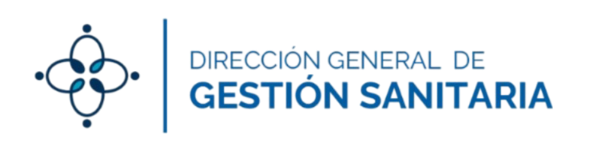

Programa de salud ACV
Portal de apoyo para el programa de ACV EN RED
Un espacio visual para centralizar accesos, recursos y rutas de trabajo del programa.
Capacitacion a Nodos Primarios
Acceso a los distintos modulos de capacitacion del NODO PRIMARIO
EnlaceCapacitacion a Nodos Secundarios
Acceso a los distintos modulos de capacitacion del NODO SECUNDARIO
EnlaceGeoLocalizador de Nodos del Programa de ACV
Acceso al buscador de los nodos primarios y su correspondencia con los nodos secundarios
EnlaceAplicativo nodos primarios
Acceso a la aplicacion del PROGRAMA DE ACV
EnlaceFlujo ACV NODO PRIMARIO
Acceso al circuito del nodo primario
EnlaceFlujo ACV NODO SECUNDARIO
Acceso al circuito del nodo secundario
EnlaceInformacion complementaria
Acceso al repositorio de archivos
EnlaceCalculadora NIHSS
Acceso al aplicativo calculadora NIHSS
EnlaceScore ABCD² para TIA
Acceso al aplicativo calculadora para TIA (accidente isquémico transitorio)
Enlace